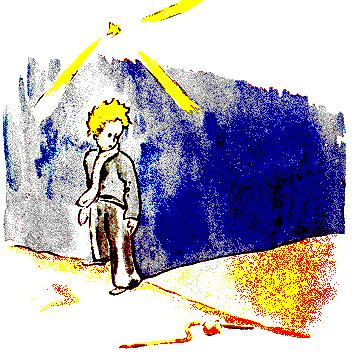

XVI
Nuair a bhíonn tú arson grinn, is minic a insíonn tú bréigín beag.
Ní raibh an fhírinne ar fad agamsa nuair a bhí mé ag caint fá
dtaobh den lucht lasta lampaí. Tá an baol ann go gcuirfidh mé
daoine amú nach bhfuil eolach ar an phláinéad seo againne. Ní
thógann an cine daonna mórán spáis ar fad ar an Talamh. An dá
mhíle milliún duinc atá ina gcónaí ann, dá mbeadh siad go léir
ina seasamh dlúite lena chéile, mar a bheadh siad ag cruinniú,
thoillfeadh siad gan stró i gcearnóg phoiblí a bheadh fiche míle
ar fhad agus fiche míle ar leithead. D'fhéadfá an cine daonna go
léir a chruachadh le chéilc ar oileáinín beag ar bith de chuid an
Aigéin Chiúin.
Na daoine fásta, ar ndóigh, ní chreidfidh siad thú. Sileann siad
siúd go dtógann siad cuid mhór spáis. Dar leo féin, tá siad chomh
toirtiúil le crann baobab. Molaigí dóibh mar sin an cuntas a
dhéanamh. Bíonn dúil mhór acu sna figiúirí; taitneoidh sé sin
leo. Ach ná cuirigí bhur gcuid ama féin amú leis an sclábhaíocht
sin. Níl gá leis. Tá muinín agaibh asamsa.
Agus an prionsa beag tagtha ar an Talamh, ba mhór an chúis
iontais dó nach raibh duine ar bith le feiceáil. Bhí eagla ag teacht
air go raibh sé ar an phláinéad contráilte, nuair a chorraigh lúb
a raibh dath na gealaí air sa ghaineamh.
- Oíche mhaith, arsa an prionsa beag ar eagla na heagla.
- Oíche mhaith, arsa an nathair.
-Cén pláinéad abhfuil mé tar éis tuirlingt air? ad fhiafraigh an
prionsa beag.
- Ar an Talamh, san Afraic, a d'fhreagair an nathair.
- Á!...an ea nach bhfuil duine ar bith ar an Talamh mar sin?
- Fásach atá ann anseo. Ní bhíonn duine ar bith sna fásaigh. Tá
an Talamh leathan, a deir an nathair. !
Shuigh an prionsa beag síos ar chloch agus d'amharc sé suas i
dtreo na spéire:
-Níl a fhios agam, ar seisean, an bhfuil na réaltaí lasta suas ionas
gur féidir le gach duine a cheann féin a aimsiú lá éigin. Breathnaigh
mo phláinéad féin. Tá sé díreach os ár gcionn...Ach nach fada i
gcéin uainn atá sé!
- Tá sé go hálainn, arsa an nathair. Cad é a thug anseo thú?

- Tá deacrachtaí agam le bláithín, arsa an prionsa beag.
- Á! a deir an nathair.
Agus thit a dtost orthu.
- Cá bhfuil na daoine? arsa an prionsa beag as a mhachnamh.
Bíonn sé beagán uaigneach san fhásach.
- Bíonn sé uaigneach i measc daoine fosta, arsa an nathair.
Bhreathnaigh an prionsa beag uirthi tamall fada:
- Is ait an t-ainmhí thú, a deir sé sa deireadh, chomh caol le mo
mhéar...
- Ach is treise mé ná méar rí, arsa an nathair.
Tháinig draothadh gáire ar an phrionsa beag:
-Níl tú chomh láidir sin...Nil crúba fút fiú amháin...Ní thig leat
taisteal fiú amháin...
- Tig liom thú a aistriú níos faide i gcéin ná mar a dhéanfadh
long, arsa an nathair.
Chorn sé é féin thart ar an mhurnán ar an phrionsa beag, mar
a bheadh bráisléad óir ann:
- An té a mbainim leis, fágann ar ais é sa chré as ar tháinig sé,
ar seisean arís. Ach tá tusa íonghlan agus is ó réalta duit...
Níor thug an prionsa beag freagra ar bith air.
- Cuireann tú trua orm, tá tú chomh lag sin, agus tú ar an
Talamh cadránta seo. Tig liom cabhrú leat lá éigin má bhíonn an
iomarca cumha ort i ndiaidh do phláinéid féin. Tig liom...
-Ó, tuigim go maith thú, a deir an prionsa beag, ach cad chuige
a mbíonn tú ag labhairt i ndubhfhocail i gcónaí.
- Tugaim réiteach orthu go léir, arsa an nathair.
Agus thit a dtost orthu arís.